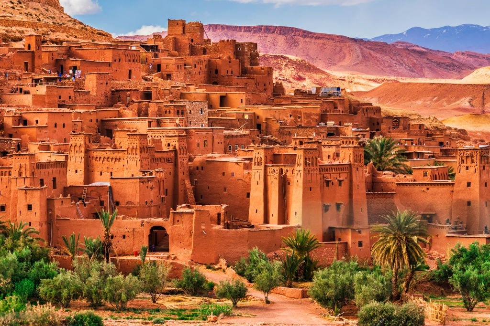

2 joursTanger → Chefchaouen
La Ville Bleue
Remontez les montagnes du Rif depuis Tanger pour atteindre Chefchaouen, cité aux façades d'indigo et de blanc suspendue dans la brume.
Médina de Chefchaouen
Cascades d'Akchour
Coucher de soleil sur le Rif
À partir de300$/pers.